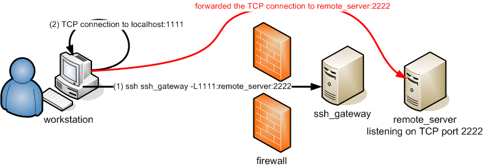

Installation notes¶
Normally, SSH is installed natively on your machine and the ssh command should be accessible from the command line (or a Terminal) through the ssh command:
(your_workstation)$> ssh -V
OpenSSH_8.4p1, OpenSSL 1.1.1h 22 Sep 2020
If that's not the case, consider installing the package openssh-client (Debian-like systems) or ssh (Redhat-like systems).
Your local SSH configuration is located in the ~/.ssh/ directory and consists of:
-
~/.ssh/id_rsa.pub: your SSH public key. This one is the only one SAFE to distribute. -
~/.ssh/id_rsa: the associated private key. NEVER EVER TRANSMIT THIS FILE -
(eventually) the configuration of the SSH client
~/.ssh/config -
~/.ssh/known_hosts: Contains a list of host keys for all hosts you have logged into that are not already in the system-wide list of known host keys. This permits to detect man-in-the-middle attacks.
SSH Key Management¶
To generate an SSH keys, just use the ssh-keygen command, typically as follows:
(your_workstation)$> ssh-keygen -t rsa -b 4096
Generating public/private rsa key pair.
Enter file in which to save the key (/home/user/.ssh/id_rsa):
Enter passphrase (empty for no passphrase):
Enter same passphrase again:
Your identification has been saved in /home/user/.ssh/id_rsa.
Your public key has been saved in /home/user/.ssh/id_rsa.pub.
The key fingerprint is:
fe:e8:26:df:38:49:3a:99:d7:85:4e:c3:85:c8:24:5b username@yourworkstation
The key's randomart image is:
+---[RSA 4096]----+
| |
| . E |
| * . . |
| . o . . |
| S. o |
| .. = . |
| =.= o |
| * ==o |
| B=.o |
+-----------------+
Warning
To ensure the security of the platform and your data stored on it, you must protect your SSH keys with a passphrase! Additionally, your private key and passphrase should never be transmitted to anybody.
After the execution of ssh-keygen command, the keys are generated and stored in the following files:
- SSH RSA Private key:
~/.ssh/id_rsa. Again, NEVER EVER TRANSMIT THIS FILE - SSH RSA Public key:
~/.ssh/id_rsa.pub. This file is the ONLY one SAFE to distribute
Ensure the access rights are correct on the generated keys using the ' ls -l ' command. The private key should be readable only by you:
(your_workstation)$> ls -l ~/.ssh/id_*
-rw------- 1 git git 751 Mar 1 20:16 /home/username/.ssh/id_rsa
-rw-r--r-- 1 git git 603 Mar 1 20:16 /home/username/.ssh/id_rsa.pub
Configuration¶
In order to be able to login to the clusters, you will have to add this public key (i.e. id_rsa.pub) into your account, using the IPA user portal (use the URL communicated to you by the UL HPC team in your "welcome" mail).

The port on which the SSH servers are listening is not the default one (i.e. 22) but 8022. Consequently, if you want to connect to the Iris cluster, open a terminal and run (substituting yourlogin with the login name you received from us):
(your_workstation)$> ssh -p 8022 yourlogin@access-iris.uni.lu
For the Aion cluster, the access server host name is access-aion.uni.lu:
(your_workstation)$> ssh -p 8022 yourlogin@access-aion.uni.lu
Alternatively, you may want to save the configuration of this connection (and create an alias for it) by editing the file ~/.ssh/config (create it if it does not already exist) and adding the following entries:
Host iris-cluster
Hostname access-iris.uni.lu
Host aion-cluster
Hostname access-aion.uni.lu
Host *-cluster
User yourlogin
Port 8022
ForwardAgent no
Now you'll be able to issue the following (simpler) command to connect to the cluster and obtain the welcome banner:
(your_workstation)$> ssh iris-cluster
==================================================================================
Welcome to access2.iris-cluster.uni.lux
==================================================================================
_ ____
/ \ ___ ___ ___ ___ ___|___ \
/ _ \ / __/ __/ _ \/ __/ __| __) |
/ ___ \ (_| (_| __/\__ \__ \/ __/
/_/ \_\___\___\___||___/___/_____|
_____ _ ____ _ _ __
/ /_ _|_ __(_)___ / ___| |_ _ ___| |_ ___ _ _\ \
| | | || '__| / __| | | | | | | / __| __/ _ \ '__| |
| | | || | | \__ \ | |___| | |_| \__ \ || __/ | | |
| ||___|_| |_|___/ \____|_|\__,_|___/\__\___|_| | |
\_\ /_/
==================================================================================
=== Computing Nodes ========================================= #RAM/n === #Cores ==
iris-[001-108] 108 Dell C6320 (2 Xeon E5-2680v4@2.4GHz [14c/120W]) 128GB 3024
iris-[109-168] 60 Dell C6420 (2 Xeon Gold 6132@2.6GHz [14c/140W]) 128GB 1680
iris-[169-186] 18 Dell C4140 (2 Xeon Gold 6132@2.6GHz [14c/140W]) 768GB 504
+72 GPU (4 Tesla V100 [5120c CUDA + 640c Tensor]) 16GB +368640
iris-[187-190] 4 Dell R840 (4 Xeon Platin.8180M@2.5GHz [28c/205W]) 3TB 448
iris-[191-196] 6 Dell C4140 (2 Xeon Gold 6132@2.6GHz [14c/140W]) 768GB 168
+24 GPU (4 Tesla V100 [5120c CUDA + 640c Tensor]) 32GB +122880
==================================================================================
*** TOTAL: 196 nodes, 5824 cores + 491520 CUDA cores + 61440 Tensor cores ***
Fast interconnect using InfiniBand EDR 100 Gb/s technology
Shared Storage (raw capacity): 2180 TB (GPFS) + 1300 TB (Lustre) = 3480 TB
Support (in this order!) Platform notifications
- User DOC ........ https://hpc.uni.lu/docs - Twitter: @ULHPC
- FAQ ............. https://hpc.uni.lu/faq
- Mailing-list .... hpc-users@uni.lu
- Bug reports .NEW. https://hpc.uni.lu/support (Service Now)
- Admins .......... hpc-team@uni.lu (OPEN TICKETS)
==================================================================================
/!\ NEVER COMPILE OR RUN YOUR PROGRAMS FROM THIS FRONTEND !
First reserve your nodes (using srun/sbatch(1))
Linux access2.iris-cluster.uni.lux 3.10.0-957.21.3.el7.x86_64 x86_64
15:51:56 up 6 days, 2:32, 39 users, load average: 0.59, 0.68, 0.54
[yourlogin@access2 ~]$
Activate the SSH agent¶
To be able to use your SSH key in a public-key authentication scheme, it must be loaded by an SSH agent.
-
Mac OS X (>= 10.5), this will be handled automatically; you will be asked to fill in the passphrase on the first connection.
-
Linux, this will be handled automatically; you will be asked to fill the passphrase on the first connection. However if you get a message similar to the following:
(your_workstation)$> ssh -vv iris-cluster [...] Agent admitted failure to sign using the key. Permission denied (publickey).
This means that you have to manually load your key in the SSH agent by running:
$> ssh-add ~/.ssh/id_rsa
SSH Resources¶
-
Mac OS X: Cyberduck is a free Cocoa FTP and SFTP client.
-
Linux: OpenSSH is available in every good linux distro, and every *BSD, and Mac OS X.
SSH Advanced Tips¶
-
Bash completion: The
bash-completionpackage eases the ssh command usage by providing completion for hostnames and more (assuming you set the directiveHashKnownHosttonoin your~/etc/ssh_config) -
Forwarding a local port: You can forward a local port to a host behind a firewall.

This is useful if you run a server on one of the cluster nodes (let's say listening on port 2222) and you want to access it via the local port 1111 on your machine. Then you'll run:
(your_workstation)$> ssh iris-cluster -L 1111:iris-014:2222
- Forwarding a remote port: You can forward a remote port back to a host protected by your firewall.

-
Tunnelling for others: By using the
-gparameter, you allow connections from other hosts than localhost to use your SSH tunnels. Be warned that anybody within your network may access the tunnelized host this way, which may be a security issue. -
Using OpenSSH SOCKS proxy feature (with Firefox for instance): the OpenSSH ssh client also embeds a SOCKS proxy. You may activate it by using the
-Dparameter and a value for a port (e.g. 3128), then configuring your application (Firefox for instance) to use localhost:port (i.e. "localhost:3128") as a SOCKS proxy. The FoxyProxy module is typically useful for that.

One very nice feature of FoxyProxy is that you can use the host resolution on the remote server. This permits you to access your local machine within the university for instance with the same name you would use within the UL network. To summarize, that's better than the VPN proxy ;)
Once you setup a SSH SOCKS proxy, you can also use tsocks, a Shell wrapper to simplify the use of the tsocks(8) library to transparently allow an application (not aware of SOCKS) to transparently use a SOCKS proxy. For instance, assuming you create a VNC server on a given remote server as follows:
(remote_server)$> vncserver -geometry 1366x768
New 'X' desktop is remote_server:1
Starting applications specified in /home/username/.vnc/xstartup
Log file is /home/username/.vnc/remote_server:1.log
Then you can make the VNC client on your workstation use this tunnel to access the VNS server as follows:
(your_workstation)$> tsocks vncviewer <IP_of_remote_server>:1
- Escape character: use
~.to disconnect, even if your remote command hangs.